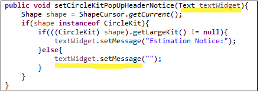
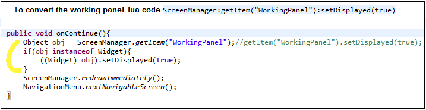
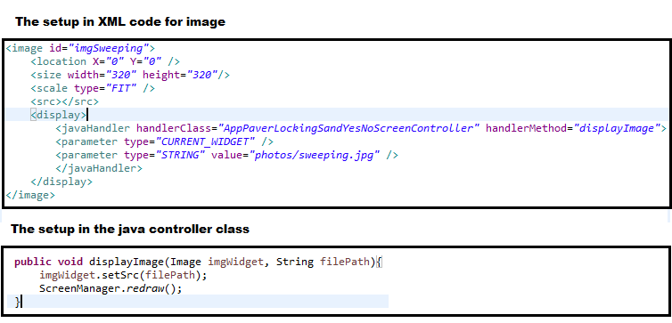
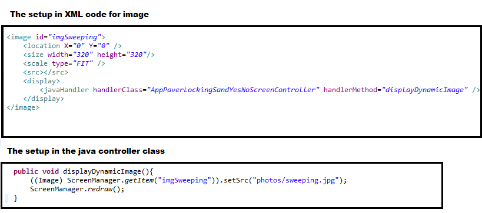

A scripting language we used inside XML to do dynamic programming. It allows you in a way to call java functions inside XML documents.
We are trying to phase away from using LUA and replace it with javaHandlers.
Used inside XML files, you put LUA codes inside <script> tags
<script>
this:setMessage("")
if(levelHeight == DeckSettings.levelConstants.ON_GROUND_HEIGHT) then
this:setMessage("Posts, beams and footings are not included for this deck since it is on the ground.")
else
newMsg = tostring(levelHeight)
this:setMessage(newMsg .. " is the level height")
end
</script>
Because we are phasing away from LUA, we use the javahandler to replace using LUA codes. This way we can actually debug the codes in java.
With no parameters, you close the java handler with the slash
<javaHandler handlerClass="ClassName" handlerMethod="classMethod" />
With parameters, The order of the parameter matters. You have to specify the type of the parameter value. You also don't close the java handler until the end.
<javaHandler handlerClass="ClassName" handlerMethod="classMethod" > <parameter type="INTEGER" value="1"/> <parameter type="INTEGER" value="40"/> <parameter type="CURRENT_WIDGET" /> </javaHandler>
For text widget, in the java controller class, you would do something like this to modify the text or CURRENT_WIDGET. 
For converting the working panel 
For images: Method to load images that can be used over and over

For modifying image widgets dynamically even after a screen draw, you want to target the image id
